|
 THE RISING SEA DRAGON IN ASIA - 2008 UPDATE By Jeff Head - Last Update: January 26, 2013 |
 |
              
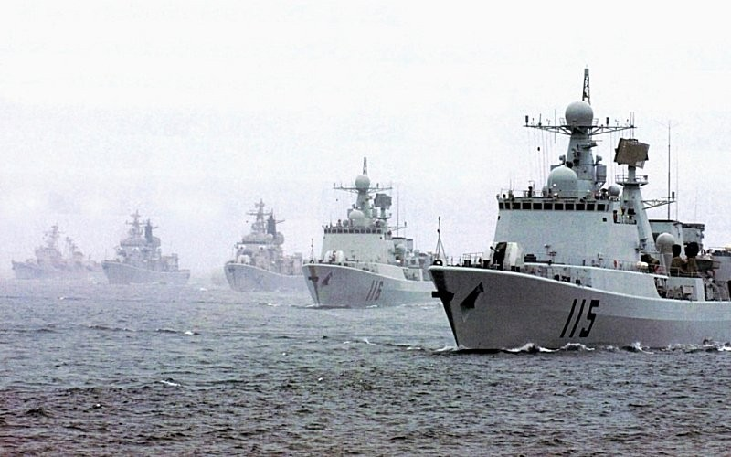 Throughout 2007 the People's Liberation Army Navy (PLAN) has concentrated on integrating its newest surface combatants into its various fleets, while introducing new combatants simultaneously. In particularly, the newer nuclear attack and ballistic missile submarines have been officially seen and photographed, punctuating the PLAN's continued advance and improvement of its nuclear submarine capability, while continuing to build and add new diesel electric submarines. It's new Landing Ship Dock and now new, associated LCAC craft are being integrated into the fleet. The PLAN thus continues its unprecedented modernization and buildup integrating its new guided missile destroyers, guided missile frigates, fast attack craft, very modern and quiet diesel/electric attack submarines, nuclear attack submarines, nuclear ballistic missile submarines, logisitic support craft, amphibious assault craft, and the infrastructure and aircraft to support them are coming online and being trialed and tested at sea and in the air by the PLAN.
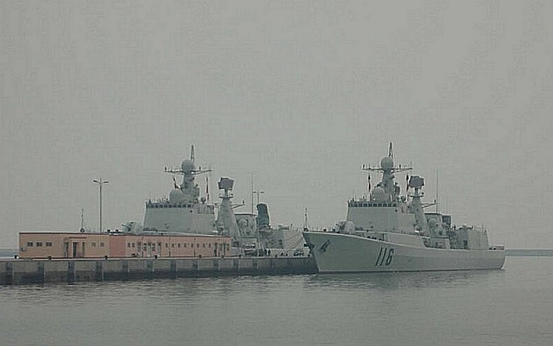 The new Type 051C, guided missiles destroyers have undergone sea trials and their pennant numbers have been added, 115 and 116 as they have joined the North Sea Fleet.
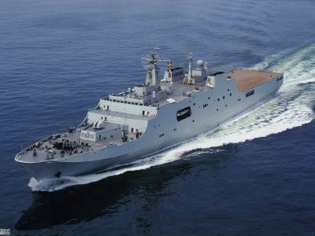 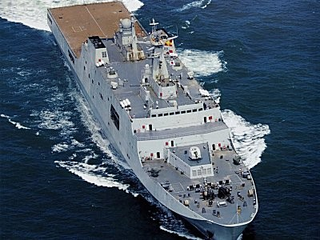 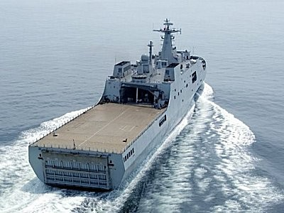 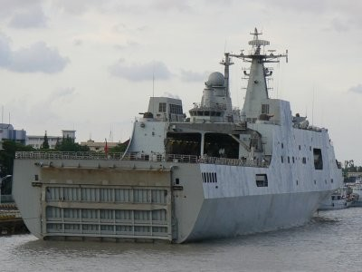 The new Type 071 LPD has been conducting sea trials. This is a significant addition to the PLAN, representing the largest amphibious vessel in their inventory and a very modern and capable design of which more are sure to be built. The vessle displaces 20-25,000 tons and is capable of both air assault and amphibious assault as the new LCAC craft which have now started appearing, and which are shown in the following photographs attest.
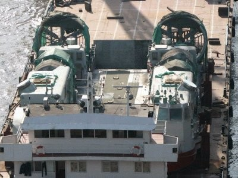 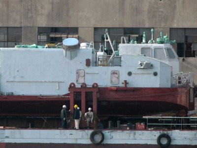 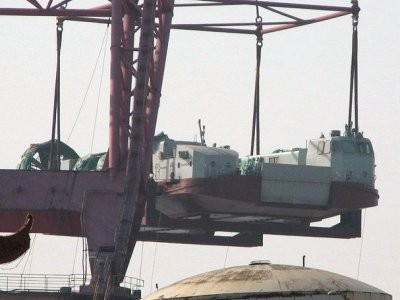 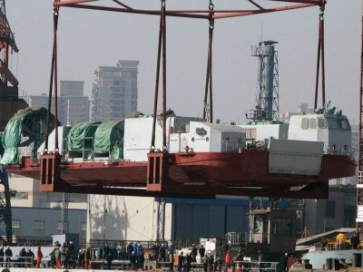 The PLAN has introduced a new LCAC design, clearly intended for their new Lanning Platform Dock. These are very similar in size and function to the US Navy's LCAC and appear capable of carrying at least one main battle tank or and assortment of other vehicles and troops. The LPD appears to be able to hold at least two, and perhaps three of these craft.
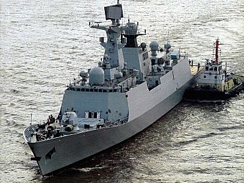 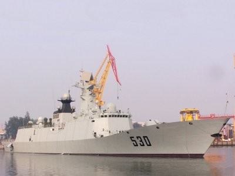 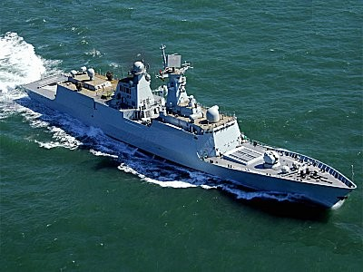 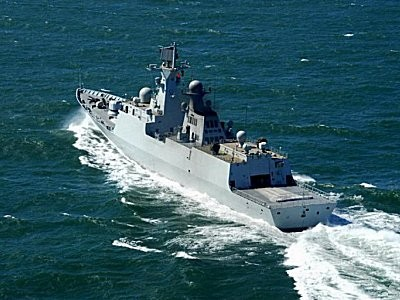 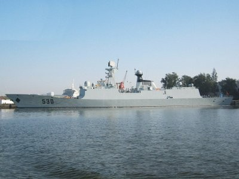 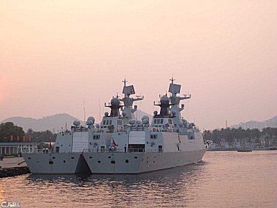 The new Type 054A guided missiles frigates have been undergoing sea trials. With their vertical launch missiles and heavier displacement and other improvements, they represent extremely modern and capable frigates. The east and south sea fleets will probably both benefit from these vessels, particularly as more are added.
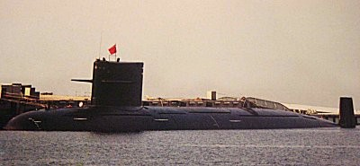 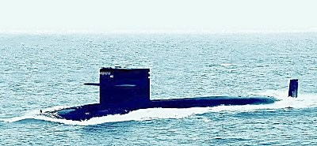 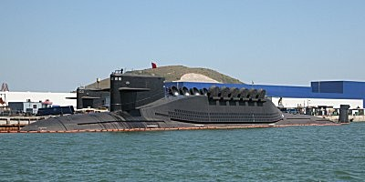 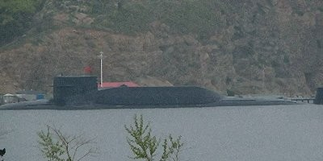 The PLAN has offically recognized the existance of the new Type 093 nuclear attack submarine (SSN) and the Type 094 ballistic missile submarine (SSBN). The SSN appears to be roughly equivalent to a US Navy Los Angeles attack submarine in design and capability, and perhaps close to the advanced Los Angeles class. The SSBN carries 12 SLBMs, each with a range of several thousand kilometers. It cannot be over emphasized how critical these developments are in the relative sea power in the western Pacific, particularly as the PLAN builds more of these vessels. It is thought that at least two, and perhaps up to four new SSNs are already launched and through trials, while at least one, and perhaps two of the new SSBNs have been launched to date.
   In the mean time, steady work continues on the Varyag, the full-deck aircraft carrier undergoing refit at the Dalian naval shipyards. Outside of finish work on the island, the deck and hull seem to be complete with unknown progress on the interior spaces, particularly the propulsion. Significant anticipation as to the launch date of this vessel is building, with some conjecture that it may be launched just before or during the Olympics shecdeuled in Beijing.       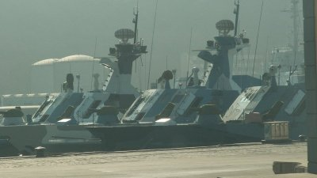 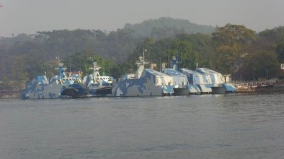 The PLAN, during this period, has shown a willingness and the capability to spend significant time and monies on training and integration exercises for its newly acquired vessels...all extremely critical in developing the expertise, policies, procedures, and doctrine for their growing modern navy. Once again, by way of reference, it should be noted that in general numbers, over the last several years, the PLAN has built and launched over 80 new major surface combatants for its fleet. In that same time period, they have not decommissioned any major surface combatants, meaning they have added over 80 major surface combatant vessels to their inventory. In that same period, the US Navy has built 46 new major surface combatants. At the same time, the US Navy has decommissioned 49 major surface combatants, many of them with 10-15 years of service life remaining, meaning a net loss of three major surface combatants in this period. Clearly the trend shows that the PLAN is rapidly closing the gap between itself and the US Navy, and particualrly when focusing on the Western Pacific, which is where the PLAN is concentrated, this is a trend worthy of watching and considering in future US Navy and other western nation's planning and acquisition schedules.
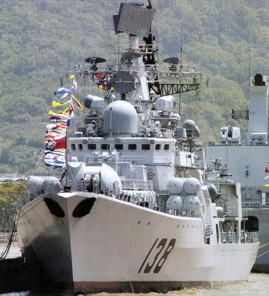 | ||
Copyright © 2005-2012 by Jeff Head
JEFFHEAD.COM Hit Counter
Jeff Head's Naval Sites Hit Counter
|